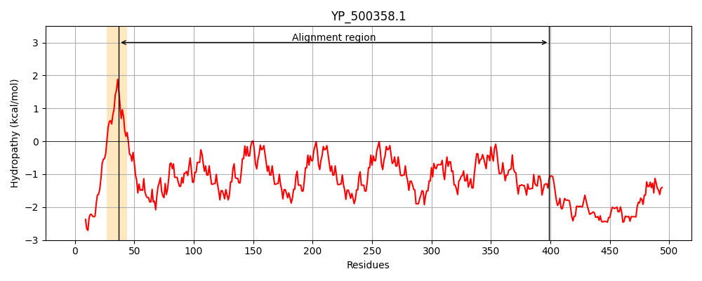
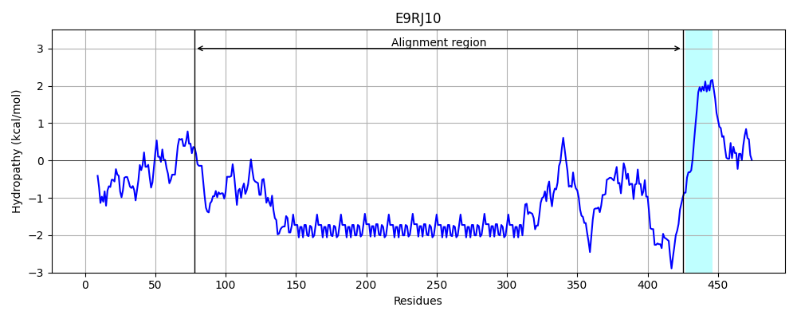
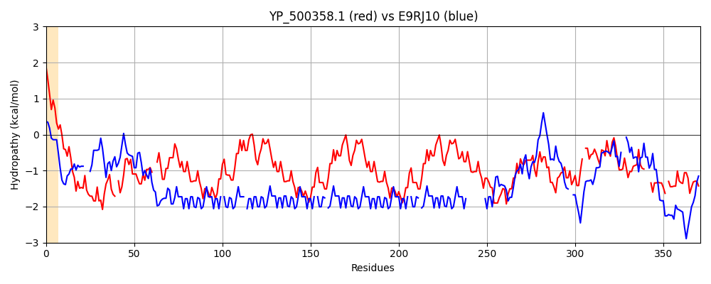

Hit Accession: E9RJ10
Hit TCID: 3.A.7.13.2
Hit Description: gnl|BL_ORD_ID|3950 gnl|TC-DB|E9RJ10|3.A.7.13.2 Putative uncharacterized protein OS=Bacillus subtilis subsp. natto PE=4 SV=1
Mach Len: 371
e:0.000000
Query TMS Count : 1
Hit TMS Count: 1
TMS-Overlap Score: 0.000000
Predicted Substrates:CHEBI:8526;protein polypeptide chain
BLAST Alignment:
Score: 206 , Bit scores: 83 bits, E-value: 2.7e-17, Alignment length: 371, Percentage identity: 26
Query: 37 LVGSALGLYFKNKVYQKADDLKVKEQELSQKFEERKTQLE-ETVAYTKERVEGFLNKSKNE--QAALKAQQAAIKEEASANNLSDTSQEAQEIQEAKREAQAEADKSVAVSNKESKAVALKAQQAAIKEEASANNLSDTSQEAQEIQEAKKEAQAETDKSAAVSNEEPKAVALKAQQAAIKEEASANNLSDTSQEAQEVQEAKKEAQAETDKSAAVSNEEPKAVALKAQQAAIKEEASANNLSDISQEAQEVQEAKKEAQAEKDSDTLTKDASAAKVEVSKPESQAERLANAAKQKQAKLTPGSK-ESQLTEALFAEKPVAKNDLKEIPQLVTKKNDVSE---TETVNIDNK-DTVKQKEAKFENGVITRK 399
LV L FK+ ++ D L Q LS+ EE + E ++ + F + KNE A +A++A EE + ++ + Q ++A++EA AEA+++ K ++ A +A++A EE + ++ + Q ++A++EA AE ++ A + EE + A +A++A EE + ++ + Q ++A++EA AE ++ A + EE + A +A++A EE + QE EA++ QAE+ + K AA V+ ++ +A KQKQ P K + ++ + A++ A DL++ QL K ++ E E + +D K K+KE K + + R+
Sbjct: 78 LVSRTLDTTFKDSPQEEKDALL---QMLSKAMEEEAVEQECNKKLFSVPNLGFFKGRKKNELDPKAAEAERARQAEEKARQEAAEAERARQAEEKARQEA-AEAERARQAEEK-ARQEAAEAERARQAEEEARQEAAEAERARQAEEKARQEA-AEAER-ARQAEEEARQEAAEAERARQAEEKARQEAAEAERARQAEEKARQEA-AEAER-ARQAEEEARQEAAEAERARQAEEKAR----------QEAAEAERARQAEEIVEENKKGKPAAAVKTHLSNGFSKGIAFLKKQKQ--YVPDRKNKREIHPPIVAQESAAMRDLEK--QLKMAKIELIEEIKKEKLELDKKLAKEKKKEDKHKKALAKRR 425 | Protein Hydropathy Plots: |
|---|
|  |  |
Pairwise Alignment-Hydropathy Plot:
|
|---|
|  |